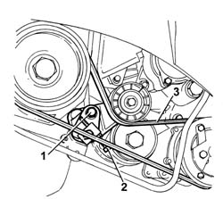

1092D10 AIR CONDITIONER COMPRESSOR DRIVE BELT - R + R
- Path
- Procedures > 10 ENGINE UNIT > 1092 VARIOUS ENGINE COMPONENT CONTROLS > 1092D AIR CONDITIONER COMPRESSOR DRIVE > 1092D10 AIR CONDITIONER COMPRESSOR DRIVE BELT - R + R
- Kind
- repair procedure (removal / refitting; the operation number is the code)
- Applies to
- engines: 2.8 JTD 8V; all production periods
- Interactive page
- https://sloeber94.github.io/elrnDB-fDct/en/#/244000990
Applies to: engines: 2.8 JTD 8V; all production periods
 Removing
Removing
 Refitting
Refitting- Disconnect the negative battery terminal.
1. Loosen the fixing bolts.
2. Loosen the moving tensioner adjustment screw.
3. Remove the compressor drive belt.

Applies to: engines: 2.8 JTD 8V; all production periods
Refitting
Removing- Fit the belt following the belt curve.
- Tighten the tensioner fixing bolt checking the torque.
- Connect the negative battery terminal.
Topics that link to this page (11)
- 1036B10 OVERHEAD CAMSHAFT - R R ON VEHICLE
- 1084B16 ENGINE OIL PUMP - R+R VEHICLES WITH A/C
- 1088C10 WATER PUMP - R + R
- 1088D26 RIGID INTAKE PIPE TO WATER PUMP - R+R FOR VERSIONS WITH A/C
- 1092A12 CRANKSHAFT PULLEY - R+R FOR VERSIONS WITH AIR CONDITIONER
- 1092B80 AUXILIARY BELT FIXED TENSIONER (ONE) - R+R
- 1092D20 AIR CONDITIONER COMPRESSOR BELT MOBILE TENSIONER - R R
- 4130B20 POWER STEERING PUMP R R
- 5040A20 AIR CONDITIONER COMPRESSOR - R+R - INCLUDES FLUID LEVEL CHECK AND TOP UP IF NECESSARY
- 5040A26 COMPRESSOR MOUNT - R R
- 5530A14 ALTERNATOR - R+R FOR VERSIONS WITH AIR CONDITIONER